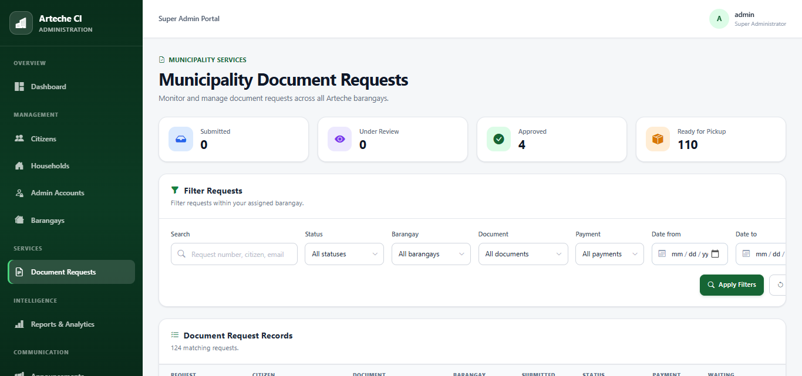

Featured Project
Barangay Community Intelligence System
A community intelligence and citizen-service platform for household information, administrative workflows, assessment, analytics, and document services.
View project![Personal Project Manager dashboard concept]()